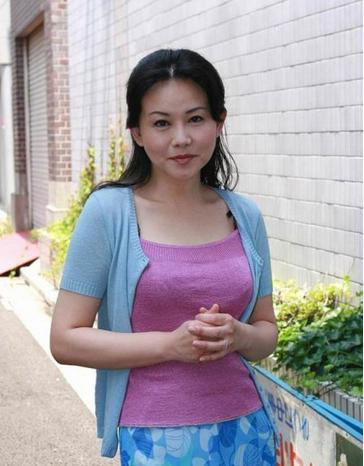
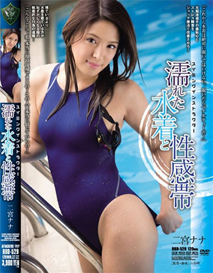

性和美丽就是她们的生存技能
1 苍井空 2 北条麻妃 3 浅井舞香 4 里美尤里娅 5 米崎真理 6 樱朱音 7 铃木里美 8 仓多真央 9 大桥未久 10 二宫奈奈 11 立花美凉
1 苍井空
苍井空，1983年11月11日出生于日本东京。2002年出道。
https://www.vmeiji.com/av/628.html
2 北条麻妃
北条麻妃，原名白石さゆり （白石小百合），1974年3月26日出生于日本石川县，2006年5月以“白石小百合（白石Sayuri）”的艺名出道。2009年转入另一公司，并改名为北条麻妃。
https://www.vmeiji.com/av/686.html
3 浅井舞香
浅井舞香（日文名：あさいまいか），1965年出生于东京都。

https://www.vmeiji.com/av/4554_2.html
4 里美尤里娅
里美尤里娅（Koizumi Aya），1983年12月17日出生于日本神奈川县。2003年12月出道，当时叫小泉彩。
https://www.vmeiji.com/av/688.html
5 米崎真理
米崎真理(Mari Yonezaki)

《54歳奇跡E-BODY米崎真理》
https://www.vmeiji.com/av/5541.html
6 樱朱音
樱朱音，1984年6月10日出生于日本东京都。2003年，首次出演。
https://www.vmeiji.com/av/4095.html
7 铃木里美
铃木里美（铃木さとみ、すずき さとみ），1988年9月12日出生于埼玉县，身高为148厘米。2006年以浅田真美的名字供职于东京热(Tokyo-Hot)。2007年后以铃木さとみ(铃木里美)的名字重新出道。
https://www.vmeiji.com/av/5768.html
8 仓多真央
仓多真央（くらたまお） ，出生于1994年3月7日。
https://www.vmeiji.com/av/742.html
9 大桥未久
大桥未久（おおはしみく），1987年12月24日出生于日本东京都，2007年出道。
https://www.vmeiji.com/av/393.html
10 二宫奈奈
二宫奈奈，日文名是二宫ナナ，Ninomiya Nana，出生于1992年6月10日，来自于东京都，在2012年出道。

https://www.vmeiji.com/av/6198.html
11 立花美凉
立花美凉，1988年5月15日出生于日本。2007年7月21日以雪乃萤的名义发片，2010年4月宣布复出。可惜只发了一片，出道即隐退。
https://www.vmeiji.com/av/3779.html
－－